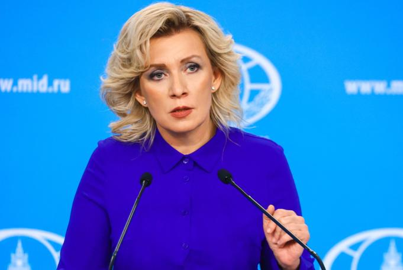

Голос МИД. Дипломатия как спектакль.

Захарова — первая женщина-официальный представитель МИД России. Превратила ежедневные брифинги в театр агрессивной риторики, конспирологии и антизападных нарративов.
Родилась в Москве. Окончила МГИМО. Специализация — международные отношения и журналистика. Карьера в МИД начинается сразу после выпуска.
Работает в посольстве России в Вашингтоне и в центральном аппарате МИД. Проходит путь от специалиста до заместителя директора Департамента информации и печати.
Первая женщина на этом посту. Лавров лично рекомендует её. Сразу меняет формат брифингов: вместо сдержанной дипломатии — наступательная риторика, провокации, личные выпады.
С первого дня вторжения выступает официальным голосом агрессии. Называет Украину «нацистским государством», обвиняет НАТО в развязывании войны, распространяет ложь о «биолабораториях». Введены санкции ЕС и Великобритании. Факт
Ведёт активный Telegram-канал, публикует теории заговора, атакует западных журналистов. Выступает на международных форумах, используя статус дипломата для продвижения пропаганды. Стала международным символом российской информационной войны. Интерпр.
Захарова работает на пересечении дипломатии и шоу-бизнеса. Официальный статус представителя МИД создаёт видимость институциональной серьёзности, за которой скрывается агрессивная пропаганда. Брифинги транслируются в прямом эфире, цитаты мгновенно тиражируются. Личный Telegram-канал усиливает эффект: аудитория получает «инсайдерский голос» без журналистской фильтрации. Захарова превращает дипломатическую трибуну в сцену — и это делает её одним из самых цитируемых пропагандистов за рубежом. Интерпр.
Персональные санкции ЕС с 2022 года — за активную поддержку и пропагандистское обоснование вторжения в Украину. Факт Великобритания ввела аналогичные санкции в том же году. Факт Канада и Австралия также внесли её в санкционные списки. Активы заморожены, въезд в ЕС и Великобританию запрещён.
Все утверждения в данном досье основаны на открытых публичных источниках. Факты, отмеченные Факт, имеют прямые первичные источники. Отмеченные Интерпр. — авторская интерпретация задокументированных событий.